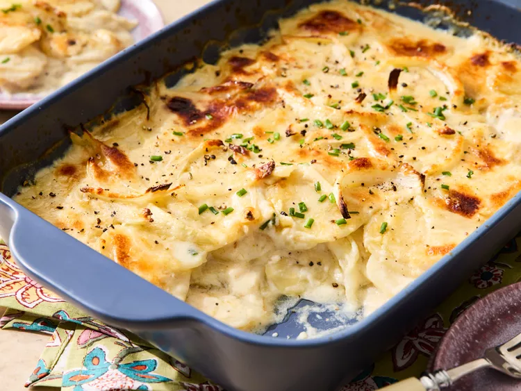

Caesar Potato Casserole

Description
This Caesar potato casserole is scalloped potatoes with a lively twist. Potato slices are baked in a creamy, lemony sauce reminiscent of Caesar salad, with plenty of Parmesan cheese in between.
Ingredients
- 1/4 cup butter
- 3 cloves garlic, minced
- 1/4 cup all-purpose flour
- 4 cups whole milk
- 1 tablespoon Dijon mustard
- 2 teaspoons Worcestershire sauce
- 1 teaspoon salt, divided
- 1 teaspoon freshly ground black pepper, divided
- 2 teaspoons lemon zest
- 2 tablespoons lemon juice
- 3 pounds russet potatoes, peeled and sliced 1/8-inch thick
- 1 cup thinly sliced onion
- 1 cup grated Parmesan cheese
- chopped fresh chives, for garnish
- cracked black pepper, for garnish
Directions
- Gather all ingredients.
- Preheat the oven to 375 degrees F (190 degrees C). Grease a 9x13-inch baking dish.
- Melt butter in a medium saucepan over medium heat. Add garlic and cook 30 seconds. Stir in flour and cook, stirring constantly, for 1 minute. Gradually whisk in milk, mustard, Worcestershire sauce, 1/4 teaspoon salt, and 1/4 teaspoon pepper. Cook, whisking constantly, until thickened and bubbly, then continue to cook and whisk 2 minutes more. Whisk in lemon zest and lemon juice. Remove from heat.
- Line bottom of prepared dish with 1/3 of potato slices; sprinkle with 1/4 teaspoon each salt and pepper, followed by 1/3 of onion slices, 1/3 of Parmesan cheese, and top with 1/3 of sauce. Repeat layers once more. Finally top with remaining potatoes, salt, and pepper, followed by remaining onion slices, and sauce.
- Sprinkle with remaining Parmesan cheese.
- Bake, uncovered, until potatoes are tender and top is golden brown, 50 to 60 minutes. Let stand 15 to 20 minutes before serving.
- Garnish with chives and/or cracked black pepper.
Home